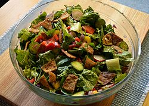

Fattoush

Lebanese salad
Ingrdients
- Romain Lettuce
- Parsley
- Mint
- Cherry Tomatos
- Cucumber
- Red onion
- Scallions
- Bell Pepper
- Feta
- Lemon olive oil dresisng
Steps
- Chop up the lettuce,parsley, scallions and mint
- Put the lettuce,parsley,scallions and mint in a large bowl
- Dice the red onion and soak it in water for 20 minutes
- Dice the cherry tomatos,cucmber, and bell pepper. Then out it in the same large bowl
- Add the red onion after it is done soaking for 20 minutes
- and feta and dressing